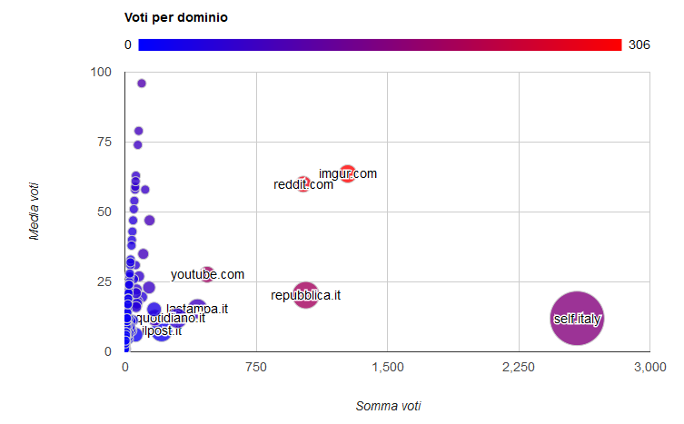
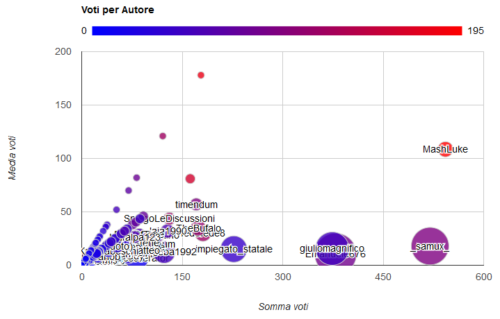

Grafici e statistiche di sei mesi del 2016 di /r/italy
Scritto il da Timendum
Grazie a PRAW ho estratto tutti i post e i commenti degli ultimi 6 mesi (esclusi gli ultimi 7 giorni).
Ho quindi avviato alcune analisi, sotto trovate il necessario per replicare.
Migliori domini
Una volta raggruppati i domini e normalizzati i nomi, ecco un grafico rappresentativo: sulle x la somma dei voti, sulle y la media, il colore quant’è la media e la grandezza quanti ne ho trovati.
Per la versione ridotta ho mantenuto solo i maggiori domini e quelli con più di una entry.

Submission per autore
Ho raggruppato i post per autore: sulle x la somma dei voti, sulle y la media, il colore quanti ne ho trovati e la grandezza quant’è il voto minimo.

Commenti
Ho raggruppato i post per autore: sulle x quanti commenti in scala logaritmica_2, sulle y la distanza tra il migliore ed il peggiore, il colore la media dei voti e la grandezza la somma dei voti. Il filtro è a 100 di karma in questi 6 mesi.
Per la versione ridotta ho mantenuto solo le top 10 nelle dimensioni calcolate.

I commenti migliori
- di /u/il_doc dario fu con 209
- di /u/00derper FIGA con 168
- di /u/weather-pan Ariana grande con 142 (smentendo /u/HolyJesusOnAToast)
- di /u/oldpoint il riscatto con 128
- di /u/El_Medico lo svedese con 109 (traduzione Most of Sweden also think it’s strange)
Note tecniche
Grazie soprattutto a Light_fenix per il consiglio di snellimento.
I due CSV: https://paste.ee/p/xyFD0 e https://paste.ee/p/cMoZl
Per l’estrazione un piccolo script python che si appoggia a PRAW. Li ho elaborati con Excel, qualche formula per i domini più tabelle pivot.
Per i grafici ho usato Google bubble chart.
Per la creazione delle pagine ho usato Thimble di Mozilla.
__
edit ho aggiunto le versioni ridotte di dominio e commenti, grazie al suggerimento di Light_fenix e SpiegoLeDiscussioni.